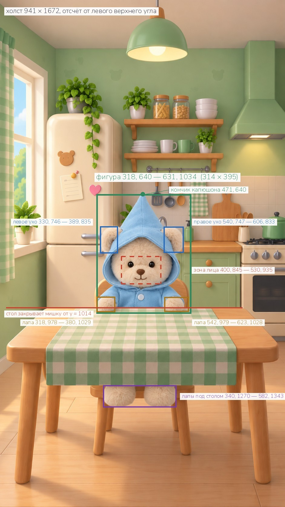
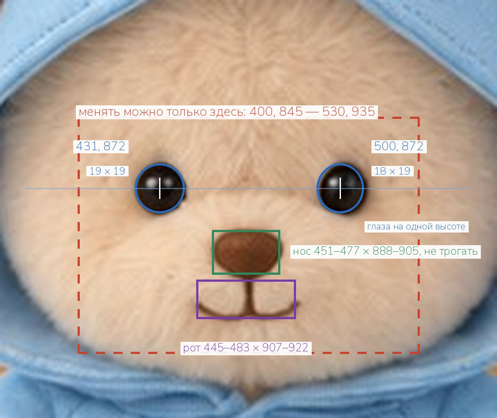
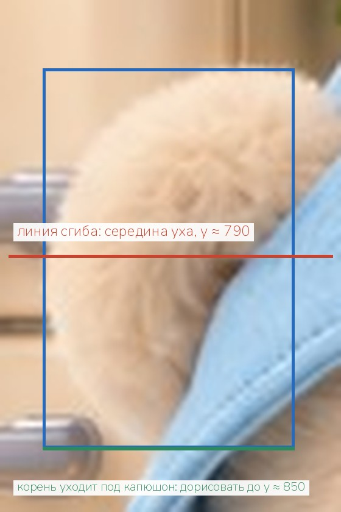

Мишка за столом должен дышать, моргать, водить глазами, есть и
реагировать на еду. Для этого плоская картинка кухни разбирается на слои,
как уже сделано со спальней. Комната без мишки получена и принята. Ниже все
обмеры и три шага задания: сам мишка, уши и варианты лица.
Что уже принято
✓
Комната без мишки941 × 1672, стол, стул и скатерть на месте, мишка убран. Принято,
переделывать не надо. Картинка перерисована заново и с исходником не
совпадает точка в точку, поэтому все обмеры ниже сняты с исходной
картинки, где мишка есть, и мишку вырезать нужно из неё.
Как слои складываются
Снизу вверх. Каждый слой — отдельный файл PNG на холсте 941 × 1672,
с настоящей прозрачностью, фигура стоит ровно на своём месте.
комната без мишки — принята;
лапы под столом — kitchen_feet.png;
левое и правое ухо целиком — kitchen_ear_left.png,
kitchen_ear_right.png;
мишка без ушей: капюшон, голова, туловище, лапы на столе —
kitchen_bear_noears.png;
варианты лица — десять копий мишки, отличаются только зоной глаз и рта.
Лапы на столе лежат поверх скатерти, поэтому отдельный слой стола не
нужен: стол остаётся на фоне, мишка режется по его кромке.
Все обмеры разом
Что
Где
Холст каждого слоя
941 × 1672
Прямоугольник фигуры мишки
318, 640 — 631, 1034 (314 × 395)
Кончик капюшона
471, 640
Левое ухо
330, 746 — 389, 835
Правое ухо
540, 747 — 606, 833
Линия сгиба уха (середина)
y ≈ 790
Корень уха под капюшоном, дорисовать до
y ≈ 850
Левый глаз, центр
431, 872 · размер 19 × 19
Правый глаз, центр
500, 872 · размер 18 × 19
Нос
451–477 по ширине, 888–905 по высоте
Рот
445–483 по ширине, 907–922 по высоте
Зона лица — только её можно менять
400, 845 — 530, 935
Левая лапа на столе
318, 978 — 380, 1029
Правая лапа на столе
542, 979 — 623, 1028
Стол закрывает мишку от
y = 1014
Лапы под столом
340, 1270 — 582, 1343
Все числа — точки исходной картинки 941 × 1672, отсчёт от левого
верхнего угла. На следующих страницах то же самое нарисовано.

Обмеры: где стоит мишка. Зелёное — фигура, синее — уши,
жёлтое — лапы на столе, фиолетовое — лапы под столом, красный пунктир —
зона лица, красная линия — кромка стола.

Обмеры: мордочка. Красный пунктир — единственное место, где
вариантам разрешено отличаться друг от друга. Глаза стоят на одной
высоте, голова не наклонена.

Ухо. В приложении ухо не поворачивается целиком, а сгибается
посередине: верхняя половина клонится, нижняя стоит. Поэтому ухо нужно
целиком, вместе с корнем, который на исходнике спрятан под капюшоном.
Задание
Три шага, строго по очереди. Второй и третий делаются по файлу из
первого, иначе получатся разные мишки, и при переключении он будет
дёргаться всей фигурой.
Шаг 1Мишка на своём месте kitchen_bear.png и kitchen_feet.png
Из исходной картинки кухни (941 × 1672, с мишкой) вырезать плюшевого
мишку и положить на полностью прозрачный фон. В фигуру входит капюшон,
голова, оба уха, туловище и обе лапы, лежащие на столе. Ниже кромки стола
(y = 1014) остаются только лапы: то, что закрыто столом, не рисовать.
Глаза открытые, рот закрыт, как на исходнике.
Размер и место
Холст ровно 941 × 1672. Фигура занимает прямоугольник от точки
318, 640 до точки 631, 1034 — 314 в ширину и 395 в высоту. Кончик
капюшона приходится на точку 471, 640. Всё поле вне фигуры полностью
прозрачное.
Лапы под столом
Отдельным файлом kitchen_feet.png на таком же холсте:
две лапы, свисающие со стула под столом, прямоугольник 340, 1270 —
582, 1343. Ножки стула и стола в слой не включать.
Край шерсти
Вырезать мягко, по волоску, с полупрозрачными кончиками ворса.
Никакой белой, серой или зелёной каймы по контуру. Ни одного кусочка
стула, скатерти или стены в слое.
Тень
Тень мишки на скатерти и на спинке стула в слой не включать —
она остаётся на фоне.
Формат
PNG-24 с альфа-каналом, без сжатия с потерями.
Нельзя рисовать мишку заново. Это должен быть тот
же самый мишка с исходной картинки: та же форма капюшона, те же места ушей
и лап, тот же свет. Новая генерация не сядет на стул, с которого его
убрали.
Если инструмент не умеет ставить фигуру в заданный
прямоугольник — отдавайте мишку на прозрачном фоне как есть, размер и
место подгонятся на нашей стороне. Но этот файл обязательно сохранить:
все файлы шагов 2 и 3 делаются из него.
Шаг 2Уши отдельно kitchen_bear_noears.png, kitchen_ear_left.png, kitchen_ear_right.png
Три файла из kitchen_bear.png, холст и место фигуры те же.
kitchen_bear_noears.png
Тот же мишка, но без ушей. Там, где были уши, контур капюшона
продолжается плавно, видна только ткань капюшона; всё, что было за
ушами снаружи капюшона, — прозрачное. Больше ничего не менять.
kitchen_ear_left.png, kitchen_ear_right.png
В каждом файле одно ухо, целиком, на своём месте: левое в
прямоугольнике 330, 746 — 389, 835, правое в 540, 747 — 606, 833.
Дорисовать ту часть уха, которая на исходнике спрятана под капюшоном,
до корня, примерно до y = 850: ухо будет сгибаться посередине, и корень
должен существовать. Тот же ворс, тот же свет, слегка более светлая
внутренняя сторона. Всё остальное в файле прозрачное.
Шаг 3Десять вариантов лица
Десять копий файла kitchen_bear.png, в которых
перерисованы пиксели только внутри прямоугольника от точки 400, 845 до
точки 530, 935. Это зона глаз, носа и рта. Нос не трогать: он остаётся на
месте, 451–477 по ширине, 888–905 по высоте.
Файл
Что на мордочке
kitchen_eyes_closed.png
глаза закрыты спокойными дугами, рот как на исходнике
kitchen_eyes_left.png
глаза открыты, зрачки смотрят влево (в сторону окна), рот как на исходнике
kitchen_eyes_right.png
глаза открыты, зрачки смотрят вправо (в сторону плиты), рот как на исходнике
kitchen_eyes_down.png
глаза открыты, зрачки опущены вниз, на стол, рот как на исходнике
kitchen_mouth_open.png
глаза как на исходнике, рот открыт — ждёт ложку, виден кончик языка
kitchen_mouth_chew.png
глаза как на исходнике, рот закрыт плотнее, жуёт: губы чуть сжаты, щёчки чуть полнее в пределах зоны
kitchen_emo_happy.png
радость: глаза зажмурены счастливыми дугами, рот широко улыбается, виден язычок
kitchen_emo_sad.png
грусть: глаза полуприкрыты и смотрят вниз, уголки рта опущены
kitchen_emo_surprise.png
удивление: глаза широко раскрыты, крупнее обычного, с яркими бликами, рот маленьким кружком «о»
kitchen_emo_love.png
нежность: глаза закрыты счастливыми дугами, маленькая довольная улыбка, щёчки чуть розовее (сердечки рисовать не надо, их добавит приложение)
Что должно остаться нетронутым
Всё, что за пределами прямоугольника 400, 845 — 530, 935, — точка в
точку как в kitchen_bear.png: капюшон, уши, лапы, складки
ткани, цвет шерсти, свет, тени, край ворса и альфа-канал. Размер холста,
положение фигуры, её масштаб и поворот не меняются.
Ориентиры
Левый глаз — центр 431, 872, размер 19 × 19. Правый глаз — центр
500, 872, размер 18 × 19. Глаза на одной высоте. Рот — 445–483 по
ширине, 907–922 по высоте. Это пришитые глаза-бусины и вышитый рот
плюшевой игрушки: закрытые глаза — дуги той же тёмной нитью, а не
нарисованные веки.
Формат
PNG-24 с альфа-каналом, холст как у kitchen_bear.png.
Нельзя генерировать мишку заново для каждого
варианта. Если фигура рисуется с нуля, у неё сдвигаются капюшон, уши и
лапы — и вместо того, чтобы моргнуть, мишка дёргается целиком. В спальне
первая партия пришла именно такой, и её пришлось переделывать.
Проверка перед отправкой
Файлов пятнадцать: kitchen_bear.png,
kitchen_feet.png, kitchen_bear_noears.png,
kitchen_ear_left.png, kitchen_ear_right.png и
десять вариантов лица.
У всех одинаковый холст 941 × 1672, и фигура стоит на одном и том же месте.
Если наложить любые два варианта лица друг на друга — отличаются
только глаза и рот. Капюшон, уши и лапы совпадают.
Если наложить мишку без ушей и два уха — получается ровно
kitchen_bear.png, плюс корни ушей под капюшоном.
Фон прозрачный, каймы по краю нет, кусочков стула и скатерти нет.
Комнату без мишки переделывать и присылать заново не надо — она принята.
Отдать файлами, а не картинками в переписке: в переписке они приходят
сжатыми и без прозрачности, проверить их невозможно.